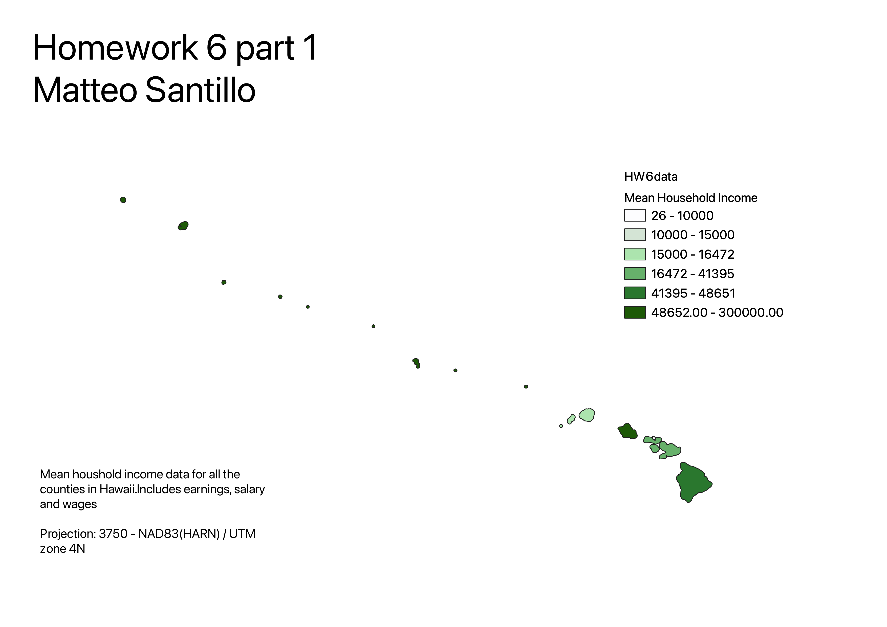

Homework 6: Census data choropleth
Matteo Santillo
The following map shows average household income for all counties in Hawaii. These counties include Hawaii County, Honolulu county, Kalawao County, Kauai County, and Maui County. The data includes household income in all households in Hawaii with earnings, wages, or salary.

Data used for this project
CSV dataset
Link to shapefile